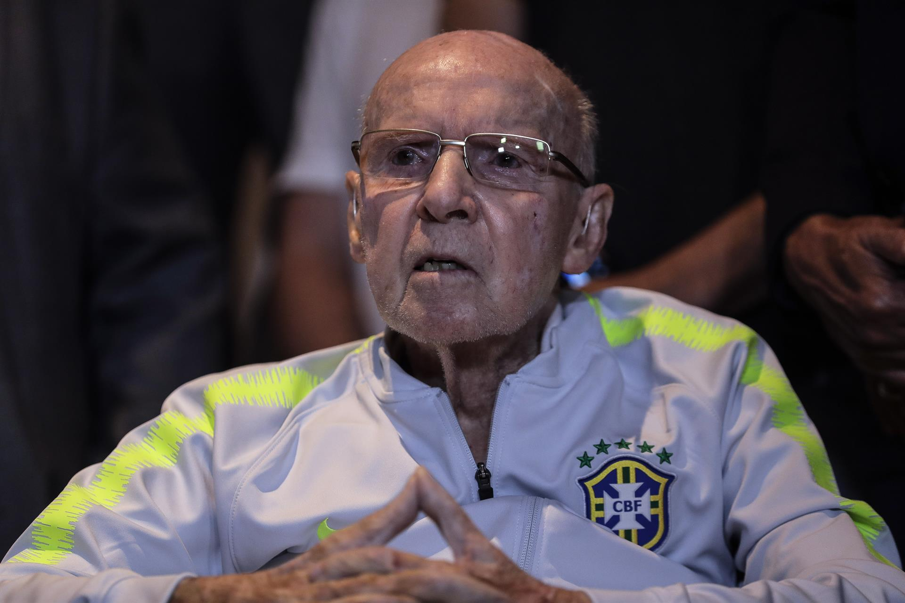

Zagallo

Grande vencedor no futebol, dentro e fora de campo, detém o recorde de títulos das Copas do Mundo FIFA em geral. Já
vitorioso como jogador nas edições de 1958 e 1962, Zagallo sagrou-se campeão da competição como treinador em 1970,
sendo um dos três a conquistar a Copa como jogador e como treinador, e depois como coordenador técnico, em 1994,
totalizando quatro conquistas em três funções diferentes.Conhecido como "Velho Lobo", ainda treinou a Seleção
Brasileira em 1974 e 1998, obtendo o vice-campeonato neste último, e foi novamente coordenador técnico da equipe em
2006, compondo a comissão técnica de Carlos Alberto Parreira, reeditando a parceria de 1994, desta vez sem sucesso.
No total foram cinco finais em sete participações nas Copas do Mundo.
Voltar